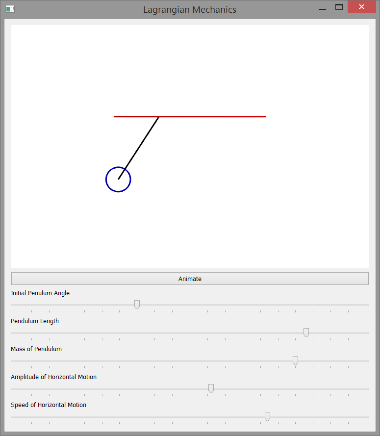

Lagrangian Mechanics Example
This program simulates the motion of a simple pendulum whose base is
driven horizontally by \(x = a\sin wt\). The simulation is written in C++ and
uses the QT application framework.
Lagrangian System Derivation
Consider a pendulum of mass \(m\) and length \(l\) whose base is
driven horizontally by \(x=a\sin wt\). For this system, we will choose
the angle \(\theta\) as the single generalized coordinate and develop the Lagrangian
Equation of Motion:
$$ {\large \frac{\partial L}{\partial \theta} -
\frac{d}{dt} \frac{\partial L}{\partial \dot{\theta}} = 0 } $$
Where \(L\) is the Lagrange function and \(T\) and \(U\) are the
the total kinetic energy and total potential energy of the system.
$$ {\large L = T - U } $$
We know the position of the base at any time in the simulation, so
$$ {\large\begin{align} x_0 & = a\sin\left ( wt \right ) \\
y_0 & = 0 \end{align} } $$
Where \(a\) is the horizontal amplitude of motion and \(w\) is the
speed of the motion. We can find the position of the mass with
$$ {\large\begin{align} x_1 & = x_0 + l\sin\left ( \theta \right ) =
a\sin\left ( wt \right )+l\sin\left ( wt \right ) \\
y_1 & = y_0-l\cos\left ( \theta \right )=-l\cos\left ( \theta \right ) \end{align} } $$
where \(l\) is the length of the pendulum and \(\theta\) is the angle of the
pendulum as in the system diagram above. We can differentiate the position
of the mass to find its velocity. Theta is a function of time, so remember
to apply the chain rule when differentiating the expression.
$$ {
\large
\begin{align}
\dot{x_1} & = aw\cos\left ( wt \right )+l\dot{\theta}\cos\left ( \theta \right ) \\
\dot{y_1} & = l\dot{\theta}\sin\left ( \theta \right )
\end{align}
} $$
Now that we know the velocity of the mass, we can find the total kinetic
energy of the system
$$ {\large
\begin{align}
T & = \frac{1}{2}m\left ( \dot{x_1}^2 + \dot{y_1}^2 \right ) \\
T & = \frac{1}{2}a^2mw^2\cos^2\left ( wt \right ) +
a\dot{\theta}lmw\cos\left ( \theta \right )\cos\left ( wt \right ) +
\frac{1}{2}\dot{\theta}^2l^2m\sin^2\left ( \theta \right ) +
\frac{1}{2}\dot{\theta}^2l^2m\cos^2\left ( \theta \right )
\end{align}
} $$
where \(m\) is the mass of the pendulum. Note that the above expression
can been simplified by using the following trigonometry identity:
$$ {\large \sin^2\left ( \theta \right ) + \cos^2(\theta) = 1 } $$
And T becomes:
$$ {\large
T = \frac{1}{2}a^2mw^2\cos^2\left ( wt \right ) +
a\dot{\theta}lmw\cos\left ( \theta \right )\cos\left ( wt \right ) +
\frac{1}{2}\dot{\theta}^2l^2m
} $$
The total potential energy of the system is then
$$ {\large U = mgy_1 = -mgl\cos\left ( \theta \right ) } $$
And now we have the Lagrange function for this system.
$$ {\large
\begin{align}
L = & \frac{1}{2}a^2mw^2\cos^2\left ( wt \right ) +
a\dot{\theta}lmw\cos\left ( \theta \right )\cos\left ( wt \right ) + \\ & \frac{1}{2}\dot{\theta}^2l^2m\sin^2\left ( \theta \right )
+ \frac{1}{2}\dot{\theta}l^2m\cos^2\left ( \theta \right ) +
mgl\cos\left ( \theta \right )
\end{align}
} $$
Differentiate L with respect to theta and we get
$$ {\large
\frac{\partial L}{\partial \theta} =
-a\dot{\theta}lmw\sin\left ( \theta \right )\cos\left ( wt \right ) -
mgl\sin\left ( \theta \right )
} $$
Differentiate L with respect to the angular velocity and we get
$$ {\large \frac{\partial L}{\partial \dot{\theta}} =
almw\cos\left ( \theta \right )\cos\left ( wt \right ) +
l^2m\dot{\theta} } $$
Differentiate the above expression with respect to time and we get
$$ {\large
\frac{d}{dt}\frac{\partial L}{\partial \dot{\theta}} =
-a\dot{\theta}lmw\sin\left ( \theta \right )\cos\left ( wt \right ) -
almw^2\cos\left ( \theta \right )\sin\left ( wt \right ) +
l^2m\ddot{\theta}
} $$
Now we can plug the above derivatives into the Lagrange equation of motion
$$ {\large
\frac{\partial L}{\partial \theta} -
\frac{d}{dt} \frac{\partial L}{\partial \dot{\theta}} =
-mgl\sin\left ( \theta \right ) +
almw^2\cos\left ( \theta \right )\sin\left ( \theta \right ) -
l^2m\ddot{\theta}
} $$
And solve for the angular acceleration
$$ {\large
\ddot{\theta} = \frac{almw^2\cos\left ( \theta \right )
\sin\left ( wt \right ) -
mgl\sin\left ( \theta \right )}{l^2m}
} $$
In the simulation, we can integrate the above expression to find the
angular velocity and integrate further to find the angular position.
User Interface
The simulation program uses the QT application framework to provide a
graphical interface for the user. This interface allows the user to change
the initial pendulum angle, the pendulum length and mass, and the speed and
amplitude of horizontal motion.

Download
Download for QT 5.3.0:
Lagrange Pendulum Simulation
Source:
https://github.com/rlguy/lagrangependulum